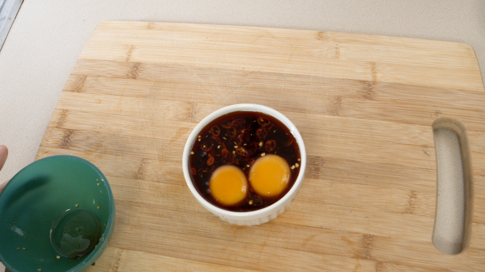

Guided Recipes/ Soy Cured Egg Yolk
Soy Cured Egg Yolk
This soy cured egg yolk is salty, spicy, and full of umami. Goes perfectly with rice, ramen, or to add a unique sauce to any protein.

Interactive Video
Directions
- Gather your ingredients.
- Peel ginger with a small spoon.
- Grate ginger into a small bowl with a microplane.
- Add 6 tbsp of soy sauce to the bowl.
- Gently roll your limeto release the juices, and cut in half.
- Thinly slice the thai chili and add to the bowl.
- Squeeze lime into the bowl.
- Stir to combine.
- Separate egg yolk from white and place gently into a small bowl.
- Gently pour sauce over egg yolks.
- Cover yolks with a paper towel and fold the edges over the top. This will pull liquid over the top of the yolks since they float.
- Refrigerate for at least 1 hour.